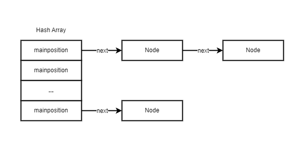
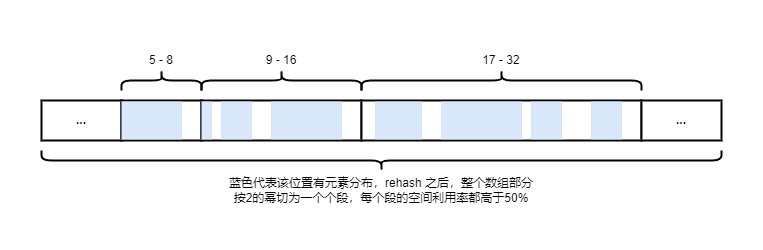
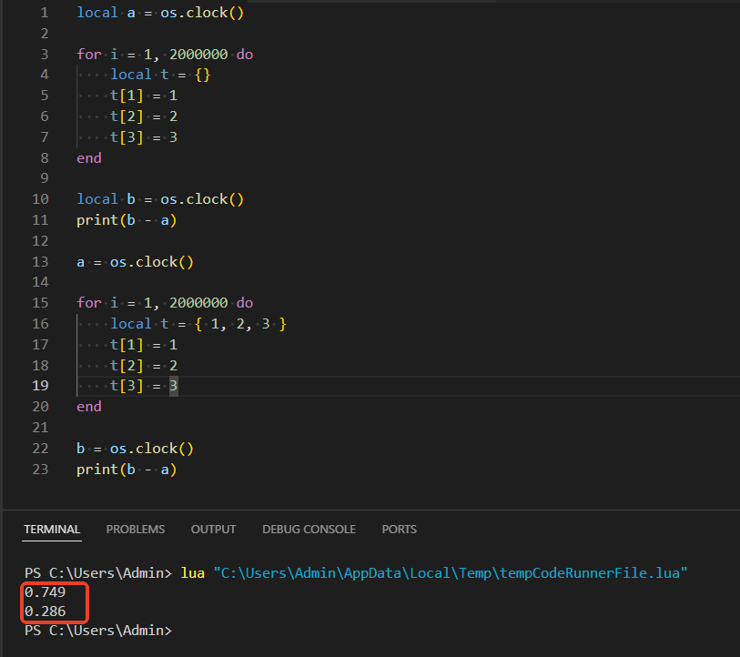

在上一节中，我们简要提到了表的数组部分和哈希部分会进行自适应调整；以正整数为键的数据可能会存储在数组部分，也可能存储在哈希部分；存储在数组部分时，它的键就是数组的索引；而存储在哈希部分时，就是单纯的键值对。Lua有一个标准去做这个调整，保证数组和哈希部分有最优的边界。
我们在来看这个例子：
1 | local t = {} |
插入的这两个元素对外部使用者来说，并不能准确地知道它们究竟写入了数组还是哈希表。我们先跳过它的写入逻辑，来看看 table 是怎么处理查找的。
查找
table 处理查找的伪代码如下：
1 | if key > 0 and key <= 数组大小 then --在数组索引范围内 |
可以看出来，一个正整数，只有在数组索引范围内时，其存储才会落在数组部分。否则也会存储在哈希部分。
新增
上面关于查找的算法可以看出来，table 的哈希部分采用链地址法。Lua
将哈希桶所在的位置称为
mainposition。哈希部分的链表结构和普通链地址法的哈希表一致：

那么 Lua 在往 table
新增数据的时候，是如何处理的？让我们关注两个入口函数
luaH_set 和 luaH_setint：
1 | void luaH_set (lua_State *L, Table *t, const TValue *key, TValue *value) { |
和以前的版本不同，Lua 5.4.4 中并没有
luaH_setstr、luaH_setnum
等API，它使用了一个公共的 luaH_set
来满足全部类型数据的新增，这本身是得益于 TValue 结构的优化。
luaH_setint ?
而 luaH_setint
则是基于整数键做出的优化函数，它会判断整数键是否属于表的数组部分，从而绕过了非整数键的检查逻辑。这样具有更高的访问效率，减少了很多不必要的逻辑计算。
举个例子：
1 | local t = {} |
t[1] = "a"
- Lua会调用
luaH_setint - 如果键
1落在数组部分，直接将"a"存入数组部分 - 如果键超出数组范围或数组未分配足够大小，调整 alimit 或将键值存入哈希部分
t["key"] = "b"
- Lua 会调用
luaH_set - 根据键的类型（字符串），计算其哈希值，找到对应的哈希桶并插入
luaH_newkey
不管是调用 luaH_setint 还是
luaH_set，如果新增的键不存在，都牵涉到一个函数
luaH_newkey：
1 | /* |
我们逐段分析，看看这个函数做了什么。
- 首先是第 11 ~ 24 行，这一段针对 key 做了一些错误处理，中间的分支对于浮点数键做了处理：如果 key 是一个浮点数，但是它的值是一个整数，那么把 key 作为一个整型值插入。
- 第 25 行，计算得到 key 的哈希值 mainposition，也就是它在哈希数组中的哈希桶的地址
- 先看 58 ~ 61 行，该 mainposition 位置空闲，这里直接将 key 和 value 设置给该位置的 Node
- 再看 26 ~ 57 行，该 mainposition
位置冲突（我们暂且称这里存放的节点为冲突节点）
- 28 ~ 34 行，尝试找一个空闲位置，如果没有，执行一次 rehash 扩张一次 table，然后插入 key 和 value
- 36 行，有现成的空闲位置，那么计算这个冲突节点的 mainposition
- 37 ~ 48 行，冲突节点的 mainposition 在其它位置，那么把冲突节点移动到一个空闲位置
- 50 ~ 57 行，冲突节点的 mainposition 就在它当前位置，那么把当前 key 和 value 插入空闲位置
总结就是：首先，检查 key 的主位置是否空闲。如果不是，则检查冲突节点是否在其主位置：如果不是，则将冲突节点移至空位置并将 key 放入其主位置；否则（冲突节点在其主位置），key 将移至空位置
这里要重点注意，整个操作都是基于哈希表进行的，而没有关于数组的逻辑。因为在执行
luaH_newkey之前，一定是通过luaH_get或者luaH_getint在数组部分检查过了，数组部分不存在的情况下，才会走进luaH_newkey的逻辑。
rehash
从前面的代码可见，在空闲空间不足的情况下，table 会自动执行一次 rehash，这个函数就是我们在前一节提到的自适应调整数组部分和哈希部分空间的算法，让我们来看看：
1 | /* |
它的大致算法思路如下：
- 分配一个数组
nums，初始它的每个元素都是 0，假设它的下标用变量 i 表示，它的每个元素的含义是 key 的值在 \({2^{(i-1)}}\) ~ \({2^i}\) 之间的元素数量（左开右闭） - 遍历数组部分，统计元素数量更新到 nums
- 遍历哈希部分，只统计正整数键，更新到 nums
- 此时，整个 table 的正整数 key 的分配已经统计在了 nums 中。接着遍历 nums 数组，找到范围区间内包含的整数数量大于50%，满足这个条件的索引可能有很多个，只要索引最大的那个
- 这个索引作为重新散列后的数组大小，也就是之前提到的
alimit，凡是超过这个值的 key，就分配到了哈希部分
从这个函数可以看出 Lua 的设计思想：简单高效、且尽量节省内存。在重新散列的过程中，除了要增大 table 的大小来容纳新的数据外，还借此机会调整了数组和哈希两个部分，让两部分都尽可能发挥其容纳效率。
下面的图是调整后的数组部分的示意图，每个 2 的幂之间的空间的存储率都大于 50%，这也是 Lua 认为数组达到最大容纳效率的标准：

代价？
从上面的分析可以看出， Lua 解释器会自动进行重新散列，并且对使用者来说是透明的。从算法和以往对哈希表扩容的经验来看，这个操作的开销不会很小，然而我们在知晓其原理后，可以手动减少它的发生，来看一个例子：
1 | local t = {} |
这个代码执行会触发 3 次 rehash：
- 第一次，为了装下 t[1] , Lua 触发了一次 rehash，数组部分长度设置为 1
- 第二次，数组长度设置为 2
- 第三次，数组长度设置为 4
也就是说，如果数组部分要装下一个数，需要执行 n 次 rehash，保证 \({2^n}\) 大于 key。对于超多元素的表，比如100万个元素，其实也不过触发了 20 次 rehash。但是在一个需要创建大量小长度的表的情况下，这个问题会很严重。但是我们可以尽可能地减少它，来看对比：

我们使用预填充的方法，减少触发重新散列，这里的优化提高了一倍多的速度！
迭代
1 | int luaH_next (lua_State *L, Table *t, StkId key) { |
Lua 中表的迭代并没有设计迭代器，很大原因是为了兼容数组部分和哈希部分的访问。
luaH_next 大致的逻辑是在当前 key 的基础上找下一个有效键值对
- 如果 key 是 nil，表示从头开始遍历，否则找到该 key 的位置，然后从下一个位置继续
- 优先遍历数组部分，因为顺序表遍历更快，找到下一个非空值。
- 如果数组部分没有找到，再遍历哈希部分，这部分就需要遍历每个桶，找到下一个有效键值对
- 不管在是数组部分还是哈希部分找到，都将键和值压入 Lua 栈，并返回成功或失败（1或0）
取长度
在 Lua 中，我们可以提供元方法 __len
来自定义表的取长度方法，Lua 本身默认提供了 #
作为取长度符号。
它的取长度的结果不是 table 的全部元素的数量，而是 table 的序列部分的长度，这个序列部分指表的第一个键的值连续的数据子集，比如：
1 | print(#{1,2,3,4,5,nil,10}) -- 输出 5 |
这和数组部分无关，尽管它看起来像是数组，这个所谓的序列对哈希部分也是一样的规则：
1 | local t1 = { |
如果一个表混合了这两种风格，那么优先取数组部分的长度：
1 | print(#{[1] = 1, [2] = 2, 1, 2, 3}) -- 输出 3 |
取长度对应的源码函数是
luaH_getn，这里不赘述了，它的算法思路大致就是先在数组部分取长度，没有取成功就在哈希部分取
总结
Lua 的表内部分为数组部分和哈希部分，虽然对使用者是透明的，但是理解其存储原理会帮助我们更正确地使用它：
- 尽量避免混用数组和哈希，提升效率
- 可以通过预先分配的方式，减少 rehash